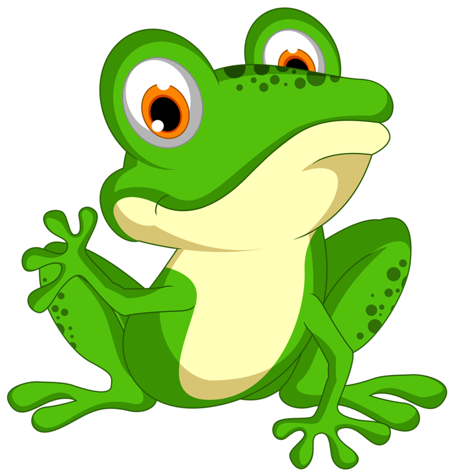

Deskripsi Katak

Katak adalah hewan amfibi atau hewan yang bertulang belakang. Dalam bahasa latin, katak juga disebut dengan Amphibia Anura.
di mana Amphibia berarti dua kehidupan dan Anura berarti tanpa ekor. Hal ini menunjukkan bahwa katak dapat hidup baik di air dan di darat.
Makanan katak adalah serangga seperti lalat dan ngengat, serta siput, siput, dan cacing. Mereka menggunakan lidah yang panjang dan air liur yang lengket untuk menangkap mangsa yang lewat.